에너지관리기사 (2009-08-30 기출문제)
1과목: 연소공학
1. 석탄을 완전연소시키기 위하여 필요한 조건에 대한 설명 중 틀린 것은?
- 공기를 적당하게 보내 피연물과 잘 접촉시킨다.
- 연료를 착화온도 이하로 유지한다.
- 통풍력을 좋게 한다.
- 공기를 예열한다.
(정답률: 96%)

2. 다음 중 단위중량당(kg) 연료의 저위발열량이 가장 큰 기체는?
- 수소
- 프로판
- 메탄
- 에틸렌
(정답률: 77%)
3. 수소 1kg을 공기 중에서 연소시켰을 때 생성된 건연소 가스량은 약 몇 m3인가? (단, 공기 중의 산소와 질소의 함유비는 21v% 와 79v%이다.)
- 5.60
- 21.07
- 56.50
- 32.3
(정답률: 79%)
4. 연소가스 중의 질소산화물 생성을 억제하기 위한 방법으로 틀린 것은?
- 2단 연소
- 고온 연소
- 농당 연소
- 배가스 재순환 연소
(정답률: 83%)
5. 공기와 혼합시 가연범위(폭발범위)가 가장 넓은 것은?
- 메탄
- 프로판
- 메틸알코올
- 아세틸렌
(정답률: 81%)
6. 분젠 버너의 가스유속을 빠르게 했을 때 불꽃이 짧아지는 이유는?
- 층류 현상이 생기기 때문에
- 난류 현상으로 연소가 빨라지기 때문에
- 가스와 공기의 혼합이 잘 안되기 때문에
- 유속이 빨라서 미처 연소를 못하기 때문에
(정답률: 85%)
7. 유압분무식 버너의 특징에 대한 설명으로 틀린 것은?
- 무화매체인 증기나 공기가 필요치 않다.
- 보일러 가동 중 버너교환이 가능하다.
- 유량조절범위가 좁다.
- 연소의 제어범위가 넓다.
(정답률: 57%)
8. 최소 점화에너지에 대한 설명으로 틀린 것은?
- 최소 점화에너지는 연소속도 및 연전도가 작을수록 큰 값을 갖는다.
- 가연성 혼합기체를 점화시키는데 필요한 최소 에너지를 최소 점화에너지라 한다.
- 불꽃 방전시 일어나는 에너지의 크기는 전압의 제곱에 비례한다.
- 혼합기의 종류에 의해서 변한다.
(정답률: 61%)
9. 숯이나 코크스 등에서 일어나는 일반적인 연소형태는?
- 표면연소
- 분해연소
- 증발연소
- 확산연소
(정답률: 77%)
10. 연료의 황(S)분에 의한 저온부식을 방지하는 방법으로 옳은 것은?
- 과잉공기를 적게 하면서 절탄기부의 배기가스 온도를 올린다.
- 과잉공기를 적게 하면서 절탄기부의 배기가스 온도를 낮춘다.
- 과잉공기를 많게 하면서 절탄기부의 배기가스 온도를 올린다.
- 과잉공기를 많게 하면서 절탄기부의 배기가스 온도를 낮춘다.
(정답률: 59%)
11. 보일러의 열정산에서 입열항목에 해당하는 것은?
- 급수의 현열
- 방산에 의한 손실열
- 불완전연소에 의한 손실열
- 연소잔재물 중 미연소분에 의한 손실열
(정답률: 75%)
12. 연소배기가스를 분석한 결과 O2 의 측정치가 4%일 때 공기비(m)는?
- 1.10
- 1.24
- 1.30
- 1.34
(정답률: 77%)
13. 다음 중 분해폭발성 물질이 아닌 것은?
- 아세틸렌
- 에틸렌
- 히드라진
- 수소
(정답률: 68%)
14. 어떤 연소가스를 분석한 결과 질소 75v%, 산소 8v%, 이산화탄소 10v%, 일산화탄소 7v% 이었다. 이 연소가스의 겉보기 분자량은 약 얼마인가?
- 28.12
- 28.88
- 29.22
- 29.92
(정답률: 44%)
15. 액체연료 중 고온건류하여 얻은 타르계 중유의 특징에 대한 설명으로 틀린 것은?
- 화염의 방사율이 크다.
- 황의 영향이 적다.
- 슬러지를 발생시킨다.
- 단위 용적당의 발열량이 극히 적다.
(정답률: 72%)
16. 탄소(C) 86%, 수소(H) 14% 의 중유를 완전연소시켰을 때 CO2max[%]는?
- 15.1
- 17.2
- 19.1
- 21.1
(정답률: 50%)
17. 고체연료의 일반적인 특징에 대한 설명으로 틀린 것은?
- 회분이 많고 발열량이 적다.
- 연소효율이 낮고 고온을 얻기 어렵다.
- 점화 및 소화기 곤란하고 온도조절이 곤란하다.
- 완전연소가 가능하고 연료의 품질이 균일하다.
(정답률: 73%)
18. 체적이 일정한 상태에서 산소 1kg을 20℃에서 220℃까지 높이는데 필요한 열량은 약 몇 kJ인가? (단, 산소의 정적비열 Cv는 0.879J/gㆍ℃이다.)
- 22
- 44
- 88
- 176
(정답률: 54%)
19. 환열실의 전열면적[m2]과 전열량[kcal/h] 사이의 관계는? (단, 전열면적은 F, 전열량은 Q, 총괄전열계수는 V이며, △fm은 평균온도차이다.)
- Q=F×V×△tm
- Q=F/△tm
- Q=F×△tm
- Q=V/(F×△tm)
(정답률: 77%)
20. 메탄(CH4) 32kg을 연소시킬 때 이론적으로 필요한 산소량은 몇 kg-mol인가?
- 1
- 2
- 3
- 4
(정답률: 61%)
2과목: 열역학
21. 증기압축 냉동사이클에서 응축온도는 동일하고 증발온도가 다음과 같을 때 성능계수가 가장 큰 것은?
- -20℃
- -25℃
- -30℃
- -40℃
(정답률: 63%)
22. 60℃로 일정하게 유지되고 있는 항온조가 실내온도 26℃인 실험실에 설치되어 있다. 이 때 항온조가 실내온도 26℃인 실험실에 설치되어 있다. 이 때 항온조로부터 실험실내의 실내공기로 1200J의 열손실이 있는 경우에 대한 설명으로 틀린 것은?
- 비가열 과정이다.
- 실험실 전체(실험실 공기와 항온조 내의 물질)의 엔트로피 변화량은 7.6J/K 이다.
- 항온조 내의 물질에 대한 엔트로피 변화량은 -3.6J/K이다.
- 실험실 내에서 실내공기의 엔트로피 변화량은 4.0K/K이다.
(정답률: 70%)
23. 밀폐계가 300kPa의 압력을 유지하면서 체적이 0.2m3에서 0.5m3로 증가하였고 이 과정에서 내부 에너지는 10kJ 증가하였다. 이 때 계가 받은 열량은 몇 kJ인가?
- 9
- 80
- 90
- 100
(정답률: 45%)
24. 엔탈피가 326kJ/kg인 어떤 기체가 노즐을 통하여 단열적으로 팽창되어 엔탈피가 322kJ/kg으로 되어 나간다. 유입 속도를 무시할 때 유출 속도는 몇 m/s인가?
- 4.4
- 22.6
- 64.7
- 89.4
(정답률: 54%)
25. 기체 동력 사이클과 가장 거리가 먼 것은?
- 증기원동소
- 가스터빈
- 불꽃점화 자동차기관
- 디젤기관
(정답률: 62%)
26. 다음 T-S 선도에서 냉동사이클의 성능계수를 옳게 표시한 것은? (단, u는 내부에너지, h는 엔탈피를 나타낸다.)
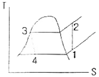
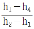
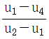
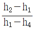
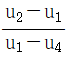
(정답률: 70%)
27. 성능계수가 4.3인 냉동기가 시간당 30mJ 의 열을 흡수한다. 이 냉동기를 작동하기 위한 동력은 약 몇 kW인가?
- 0.25
- 1.94
- 6.24
- 10.4
(정답률: 50%)
28. 열펌프(heat pump)의 성능계수에 대한 설명으로 옳은 것은?
- 냉동 사이클의 효율과 같다.
- 저온체에서 흡수한 열량과 가해준 일의 비이다.
- 고온체에 방출한 열량과 가해준 일의 비이다.
- 저온체와 고온체의 절대온도만의 함수이다.
(정답률: 59%)
29. 어떤 상태에서 질량이 반으로 줄면 강도성질(intensive property) 상태량의 값은?
- 반으로 줄어든다.
- 2배로 증가한다.
- 4배로 증가한다.
- 변하지 않는다.
(정답률: 61%)
30. 일반적으로 중간에 냉각기를 부착한 다단압축기와 일단압축기에 대한 설명으로 옳은 것은?
- 동력 소요량은 서로 길다.
- 동력 소요량은 다단압축기가 일단압축기의 2배이다.
- 동력 소요량은 압축 단수에 비례한다.
- 동력 소요량은 일단압축기가 더 크다.
(정답률: 47%)
31. CH4의 기체상수는 약 몇 kJ/kgㆍK 인가?
- 0.016
- 0.132
- 0.189
- 0.52
(정답률: 52%)
32. 공기표준 브레이튼(Brayton) 사이클에서 등엔트로피 압축으로 1기압, 20℃의 공기를 다음 중 어느 압력까지 압축하였을 때 효율이 가장 높은가?
- 2기압
- 3기압
- 4기압
- 5기압
(정답률: 58%)
33. 질소 1.36kg이 압력 600kPa 하에서 팽창하여 체적이 0.01m3증가하였다. 팽창과정에서 20kJ 의 열이 공급되었고 최종온도가 93℃였다면 초기 온도는 약 몇 ℃인가? (단, 정적비열은 0.74kJ/kgㆍ℃이다.)
- 112
- 107
- 79
- 74
(정답률: 37%)
34. 압축비 7로 운전되는 오토 사이클의 효율은 약 몇 %인가? (단. 비열비는 1.4이다.)
- 40.4
- 54.1
- 85.7
- 93.4
(정답률: 56%)
35. 보일러로부터 압력 10kgf/cm2로 공급되는 수증기의 건도가 0.95일 때 이 수증기 1kg당의 엔탈피는 약 몇 kcal인가? (단, 10kgf/cm2에서 포화수의 엔탈피는 181.2kcal/kg, 포화증기의 엔탈피는 662.9kcal/kg 이다.)
- 457.6
- 638.8
- 810.9
- 1120.5
(정답률: 53%)
36. 다음 중 과열수증기(superheated steam)의 상태가 아닌 것은?
- 주어진 압력에서 포화증기 온도보다 높은 온도
- 주어진 체적에서 포화증기 온도보다 높은 압력
- 주어진 온도에서 포화증기 온도보다 낮은 체적
- 주어진 온도에서 포화증기 엔탈피보다 큰 엔탈피
(정답률: 62%)
37. 동일한 최고 온도, 최저 온도 사이에 작동하는 사이클 중 최대의 효율을 나타내는 사이클은?
- 오토 사이클
- 디젤 사이클
- 카르노 사이클
- 브레이튼 사이클
(정답률: 64%)
38. 400K로 유지되는 항온조 내의 기체에 100kJ의 열이 공급되었다. 이 때 기체의 엔트로피 변화량이 0.3kJ/K 이라면 생성엔트로피의 값은 몇 kJ/K 인가?
- 0.01
- 0.03
- 0.⑤
- 0.30
(정답률: 43%)
39. 비열이 일정하고 비열비가 k인 이상기체의 등엔트로피 과정에서 성립하지 않는 것은? (단, T, P, v는 각각 덜대온도, 압력, 비체적이다.
- Pvk=일정
- Tvk-1=일정
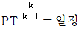
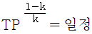
(정답률: 61%)
40. 다음 중 물의 임계압력에 가장 가까운 값은?
- 1.03kPa
- 100kPa
- 22MPa
- 63MPa
(정답률: 60%)
3과목: 계측방법
41. 편차의 정(+), 부(-)에 의해서 조작신호가 최대, 최소가 되는 제어동작은?
- 다위치동작
- 적분동작
- 비례동작
- 온ㆍ오프동작
(정답률: 73%)
42. 다음 중 광고온계의 측정원리는?
- 열에 의한 금속팽창을 이용하여 측정
- 이종(異種)금속 접합점의 온도차에 따른 열기전력을 측정
- 피측정물의 전파장의 복사 에너지를 열전대로 측정
- 피측정물의 휘도와 전구의 휘도를 비교하여 측정
(정답률: 68%)
43. 30℃를 랭킨온도로 나타내면 몇 R인가?
- 456
- 460
- 546
- 640
(정답률: 58%)
44. 차압식 유량계에서 압력차가 처음보다 2배 커지고, 관의 직경이 1/2로 되었다면, 나중 유량(Q2)과 처음 유량(Q1)의 관계로 가장 옳은 것은? (단, 나머지 조건은 모두 동일하다.)
- Q2=0.3535Q1
- Q2=1/4Q1
- Q2=1.4142Q1
- Q2=0.707Q1
(정답률: 45%)
45. 다음 측정방법 중 화학적 가스분석 방법은?
- 열전도율법
- 도전율법
- 적외선흡수법
- 연소열법
(정답률: 69%)
46. 다음 중 그림과 같은 조작향 변화는?
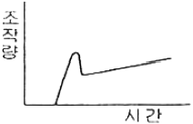
- PI동작
- 2위치동작
- PID동작
- PD동작
(정답률: 71%)
47. 다음 그림과 같은 경사관식 압력계에서 P2 는 50kg/m2일 때 측정압력 P1은 약 몇 kg/m2인가? (단, 액체의 비중은 1이다.)
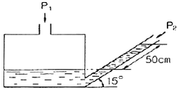
- 130
- 180
- 320
- 530
(정답률: 71%)
48. 차압식 유량계의 압력손실의 크기를 바르게 나열한 것은?
- 오리피스＜벤투리＜플로노즐
- 벤투리＜플로노즐＜오리피스
- 플로노즐＜벤투리＜오리피스
- 벤투리＜오리피스＜플로노즐
(정답률: 57%)
49. 연소가스의 통풍계로 주로 사용되는 압력계는?
- 다이어프램식 압력계
- 벨로우즈 압력계
- 링벨런스식 압력계
- 분동식 압력계
(정답률: 54%)
50. 1kgf/cm2의 압력을 수주(mmH2O)로 옳게 표시한 것은?
- 103
- 10-3
- 104
- 10-4
(정답률: 43%)
51. 개방형 마노미터로 측정한 공기의 압력은 150mmH2O이었다. 이 공기의 절대압력은 약 얼마인가?
- 150kg/m2
- 150kg/cm2
- 151.033kg/cm2
- 10480kg/m2
(정답률: 53%)
52. 복사온도계에서 전복사에너지는 절대온도의 몇 승에 비례하는가?
- 2
- 3
- 4
- 5
(정답률: 78%)
53. 진공에 대한 폐관식 압력계로서 측정하려고 하는 기체를 압축하여 수은주로 읽게 하여 그 체적변화로부터의 원래의 압력을 측정하는 형식의 진공계는?
- 눗슨(Knudsen)식
- 피라니(Pirani)식
- 맥로우드(Mcleod)식
- 벨로우즈(Bellows)식
(정답률: 53%)
54. 지름 400mm인 관속을 5kg/s로 공기가 흐르고 있다. 관속의 압력은 200kPa, 온도는 23℃, 공기의 기체상수 R이 287J/kgㆍK 라 할 때 공기의 평균 속도는 약 몇 m/s인가?
- 2.4
- 7.7
- 16.9
- 24.1
(정답률: 62%)
55. 열전대 온도계의 보호관으로 석영관을 사용하였을 때의 특징으로 틀린 것은?
- 급냉, 급열에 잘 견딘다.
- 기계적 충격에 약하다.
- 산성에 대하여 약하다.
- 알칼리에 대하여 약하다.
(정답률: 54%)
56. 폐(閉)루프를 형성하여 출력측의 신호를 압력측에 되돌리는 제어를 의미하는 것은?
- 시퀜스
- 뱅뱅
- 피드백
- 리셋
(정답률: 73%)
57. U자관 압력계에 사용되는 액주의 구비조건이 아닌 것은?
- 열팽창계수가 작을 것
- 점도가 클 것
- 모세관현상이 적을 것
- 화학적으로 안정될 것
(정답률: 69%)
58. 다음 중 열전도율이 가장 적은 것은? (단. 0℃ 기준이다.)
- H2
- SO3
- 공기
- O2
(정답률: 38%)
59. 보일러 공기예열기의 공기유량을 측정하는데 가장 적합한 유량계는?
- 면적식 유량계
- 열선식 유량계
- 차압식 유량계
- 용적식 유량계
(정답률: 59%)
60. 다음 보기의 특징을 가지는 제어동작은?
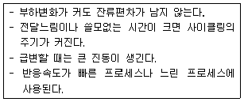
- PID 동작
- ON-OFF 동작
- PI 동작
- P 동작
(정답률: 52%)
4과목: 열설비재료 및 관계법규
61. 진주암, 흑석 등을 소성, 팽창시켜 다공질로 하여 접착제와 석면 등과 같은 무기질섬유를 배합하여 성형한 것은?
- 유리면
- 펄라이트
- 석고
- 규산칼슘
(정답률: 65%)
62. 제강 평로에서 채용되고 있는 배열회수 방법으로서 배기가스의 현열을 흡수하여 공기나 연료가스 예열에 이용될 수 있도록 한 장치는?
- 축열기
- 환열기
- 폐열 보일러
- 판형 열교환기
(정답률: 65%)
63. 도염식 가마(Down draft kiln)에서 불꽃의 진행방향으로 옳은 것은?
- 불꽃이 올라가서 가마천정에 부딪혀 가마바닥의 흡입공으로 빠진다.
- 불꽃이 처음부터 가마바닥과 나란하게 흘러 굴뚝으로 나간다.
- 불꽃이 연소실에서 위로 올라가 천정에 닿아서 수평으로 흐른다.
- 불꽃의 방향이 일정하지 않으나 대개 가마밑에서 위로 흘러나간다.
(정답률: 66%)
64. 다음 중 규산칼슘 보온재의 최고 사용온도는?
- 300℃
- 400℃
- 500℃
- 650℃
(정답률: 60%)
65. 알루미늄 박 보온재는 어떤 특성을 이용한 것일까?
- 복사열의 통과특성
- 복사열의 대류특성
- 복사열에 대한 반사특성
- 복사열에 대한 흡수특성
(정답률: 62%)
66. 동합금, 경합금 등의 비철금속 용해로로 사용되고 있으며 separate형, oven형 등으로 구분되는 것은?
- 반사로
- 도가니로
- 고리가마
- 회전가마
(정답률: 48%)
67. 열처리로 경화된 재료를 변태점 이상의 적당한 온도로 가열한 다음 서서히 냉각하여 강의 입도를 미세화하여 조직을 연화, 내부응력을 제거하는 로는?
- 머플로
- 소성로
- 풀림로
- 소결로
(정답률: 72%)
68. 에너지공급자가 제출하여야 할 수요관리 투자계획에 포함되어야 할 사항이 아닌 것은? (단, 그 밖에 수요관리의 촉진을 위하여 필요하다고 인정하는 사항은 제외한다.)
- 장ㆍ단기 에너지 수요전망
- 수요관리의 목표 및 그 달성방법
- 에너지 연구 개발내용
- 에너지 절약 잠재량의 추정내용
(정답률: 74%)
69. 다음 중 주원료의 종류에 따라 내화물을 분류한 것은?
- 부정형내화물
- 소성내화물
- 규석내화물
- 산성내화물
(정답률: 53%)
70. 배관용 강관의 기호로서 틀린 것은?
- SPP : 일반배관용 탄소강관
- SPPS : 압력 배관용 탄소강관
- SPHT : 고온배관용 탄소강관
- STS : 저온배관용 탄소강관
(정답률: 71%)
71. 에너지이용합리화법의 제정 목적으로 틀린 것은?
- 에너지 소비로 인한 환경 피해를 줄이기 위하여
- 에너지를 개발하고 촉진하기 위하여
- 에너지의 수급안정을 가하기 위하여
- 에너지의 합리적이고 효율적인 이용을 위하여
(정답률: 69%)
72. 에너지이용합리화법에 의한 에너지관리자의 기본교육과정 교육기간으로 옳은 것은?
- 4시간
- 1일
- 5일
- 7일
(정답률: 73%)
73. 단열재, 보온재 및 보냉재는 무엇을 기준으로 분류하는가?
- 열전도율
- 내화도
- 안전 사용온도
- 내압강도
(정답률: 83%)
74. 노재의 하중연화점을 측정하는 방법으로 옳은 것은?
- 소정의 온도에서 압축강도를 측정
- 하중을 일정하게 하고 온도를 높이면서 그 하중에 견디지 못하고 변형하는 온도를 측정
- 하중과 온도를 동시에 변화시키면서 변형을 측정
- 하중과 온도를 일정하게 하고 일정시간 후의 변형을 측정
(정답률: 75%)
75. 에너지절약전문기업 등록의 취소요건이 아닌 것은?
- 규정에 의한 등록기준에 미달하게 된 때
- 보고를 하지 아니하거나 허위보고를 한 때
- 정당한 사유 없이 등록 후 3년 이상 계속하여 사업수행실적이 없는 때
- 사업수행과 관련하여 다수의 민원을 일으킨 때
(정답률: 81%)
76. 다음 중 검사대상기기에 해당되지 않는 것은?
- 시간당 가스사용량이 18kg인 소형온수보일러
- 최고사용압력이 0.2MPa, 전열면적이 6.4m2인 주철제 보일러
- 최고사용압력이 1MPa, 전열면적이 9.8m2인 관류보일러
- 정격용량이 0.36MW인 철금속가열로
(정답률: 58%)
77. 다음 중 전로법에 의한 제강 작업시의 열원은?
- 가스의 연소열
- 코크스의 연소열
- 석회석의 반응열
- 용선내의 불순원소의 산화열
(정답률: 64%)
78. 소형온수보일러는 전열면적 얼마 이하를 열사용기자재로 구분하는가?
- 5m2
- 9m2
- 14m2
- 20m2
(정답률: 53%)
79. 열사용기자재관리규칙에 의한 검사대상기기에 대한 검사의 종류에 해당되지 않는 것은?
- 구조검사
- 계속사용검사
- 용접검사
- 이동검사
(정답률: 63%)
80. 길이 7m, 외경 200mm, 내경 190mm의 탄소강관에 360℃ 과열증기를 통과시키면 이 때 늘어나는 관의 길이는 몇 mm인가? (단, 주위온도는 20℃이고, 관의 선팽창계수는 0.000013이다.)
- 21.15
- 25.71
- 30.94
- 36.48
(정답률: 43%)
5과목: 열설비설계
81. 해수마그네시아 침전반응을 옳게 표현한 화학반응식은?
- CaCO3+MaCO3→CaMg(CO3)2
- CaMg(CO3)2+MgCO3→2MgCO3+CaCO3
- MgCO3+Ca(OH)2→Mg(OH)2+CaCO3
- 3MgOㆍ2SiO2ㆍ2H2O+3CO3→3MgCO3+2SiO2+2H2O
(정답률: 64%)
82. 열교환기의 대수평균온도차(LMTD)를 옳게 나타낸 것은? (단, △1은 고온유체의 입구측에서의 유체 온도차, △2는 고온유체의 출구측에서의 유체 온도차이다.)
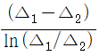
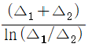
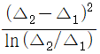
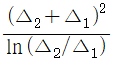
(정답률: 61%)
83. 보일러의 안전사고의 종류에 해당되지 않는 것은?
- 노통, 수관, 열관 등의 파열 및 균열
- 보일러의 스케일 부착
- 동체, 노통, 화실의 압궤(collpse) 및 수관, 연관 등 전열면의 팽출(bulge)
- 연도나 노내의 가스폭발, 역화 그 외의 이상연소
(정답률: 82%)
84. 전열게수가 비교적 낮으므로 열교환만을 목적으로 한 용도에는 부적당하나 구조가 간단하고 제작이 쉬워서 내부 유체의 보온을 목적으로 하는 경우에 적합한 열교환기는?
- 단관식 열교환기
- 이중관식 열교환기
- 플레이트식 열교환기
- 재킷식 열교환기
(정답률: 36%)
85. 보일러 수(水)의 분술의 목적이 아닌 것은?
- 물의 순환을 촉진한다.
- 가성취화를 방지한다.
- 프라이밍 및 포밍을 촉진한다.
- 관수의 pH를 조절한다.
(정답률: 74%)
86. 육용 강재 보일러의 구조에 있어서 동체의 최소 두께 기준으로 틀린 것은?
- 안지름이 900mm 이하의 것은 6mm(단, 스테이를 부착하는 경우)
- 안지름이 900mm 초과 1350mm 이하의 것은 8mm
- 안지름이 1350mm 초과 1850mm 이하의 것은 10mm
- 안지름이 1850mm 초과하는 것은 12mm
(정답률: 75%)
87. 과열기(super heater)에 대한 설명으로 틀린 것은?
- 포화증기를 과열증기로 만드는 장치이다.
- 포화증기의 온도를 높이는 장치이다.
- 고온부식이 발생하지 않는다.
- 연소가스의 저항으로 압력손실이 크다.
(정답률: 59%)
88. 운동량의 퍼짐도와 열적퍼짐도의 비를 근사적으로 표현하는 무차원수는?
- Nusselt(Nu) 수
- Prandtl(Pr) 수
- Grashof(Gr) 수
- Schmidt(Sc) 수
(정답률: 62%)
89. 다으 ㅁ중 증기트랩장치에 대하여 가장 옳게 설명한 것은?
- 증기관의 도중에 설치하여 압력의 급상승 또는 급히 물이 들어가는 경우 다른 곳으로 빼내는 장치이다.
- 증기관의 도중에 설치하여 증기의 일부가 드레인되어 고여 있을 때 응축수를 자동적으로 빼내는 장치이다.
- 보일러 등에 설치하여 드레인을 빼내는 장치이다.
- 증기관의 도중에 설치하여 증기를 함유한 침전물을 분리시키는 장치이다.
(정답률: 58%)
90. 다음 중 수관식 보일러가 아닌 것은?
- 벤슨 보일러
- 라몬트 보일러
- 코크린 보일러
- 슐저 보일러
(정답률: 49%)
91. 수질(水質)을 나타내는 ppm의 단위는?
- 1만분의 1단위
- 십만분의 1단위
- 백만분의 1단위
- 1억분의 1단위
(정답률: 77%)
92. 보일러의 성능시험 시 측정은 매 몇 분마다 실시하여야 하는가?
- 10분
- 20분
- 30분
- 60분
(정답률: 61%)
93. 10ton의 인장하중을 받는 양쪽 덮개판 맞대기 리벨이음이 있다. 리벨의 지름이 16mm, 리벳의 허용전단력이 6kg/mm2일 때 최소 몇 개의 리벳이 필요한가?
- 3
- 5
- 7
- 10
(정답률: 59%)
94. 유속을 일정하게 하고 관의 직경을 2배로 증가시켰을 경우 일반적으로 유량은 어떻게 변하는가?
- 2배로 증가
- 4배로 증가
- 8배로 증가
- 16배로 증가
(정답률: 81%)
95. 배관용 탄소강관을 압력용기의 부분에 사용할 때에는 설계 압력이 몇 MPa 이하일 때 가능한가?
- 0.5
- 1
- 1.5
- 2
(정답률: 43%)
96. 전열면에 비등기포가 생겨 열유속이 급격하게 증대하며, 가열면상에 서로 다른 기포의 발생이 나타나는 비등고정을 무엇이라고 하는가?
- 단상액체 자연대류
- 핵비등(nucleate boiling)
- 천이비등(transition boiling)
- 막비등(film boiling)
(정답률: 72%)
97. 용접봉 피복제의 역할이 아닌 것은?
- 융용금속의 정련작용을 하며 탈산제 역할을 한다.
- 융용금속의 급냉을 촉진시킨다.
- 융용금속에 필요한 원소를 보충해 준다.
- 피복제의 강도를 증가시킨다.
(정답률: 69%)
98. 연관보일러에서 연관의 최소 피치를 계산하는데 사용하는 식은? (단, P는 연관의 최소 피치(mm), t는 연관판의 두께(mm), d는 관 구멍의 지름(mm)이다.)
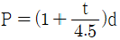
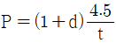
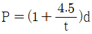
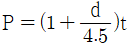
(정답률: 43%)
99. 공식(pitting)에 대한 설명으로 틀린 것은?
- 진행속도가 아주 느리다.
- 스테인리스강에서 흔히 발생한다.
- 양극반응의 독특한 형태이다.
- 공식을 방지하는 가장 좋은 방법은 재료선택을 잘하는 것이다.
(정답률: 61%)
100. 보일러의 노통이나 화실과 같은 원통 부분이 외측으로부터의 압력에 견딜 수 없게 되어 눌려 찌그러져 찢어지는 현상을 무엇이라 하는가?
- 블리스터
- 압궤
- 응력부식균열
- 라미네이션
(정답률: 82%)
석탄을 완전연소시키기 위해서는 적절한 공기 공급과 연료와 공기의 적절한 혼합, 그리고 충분한 연소 온도와 시간이 필요합니다. 따라서 "공기를 적당하게 보내 피연물과 잘 접촉시킨다.", "통풍력을 좋게 한다.", "공기를 예열한다."는 올바른 조건입니다.